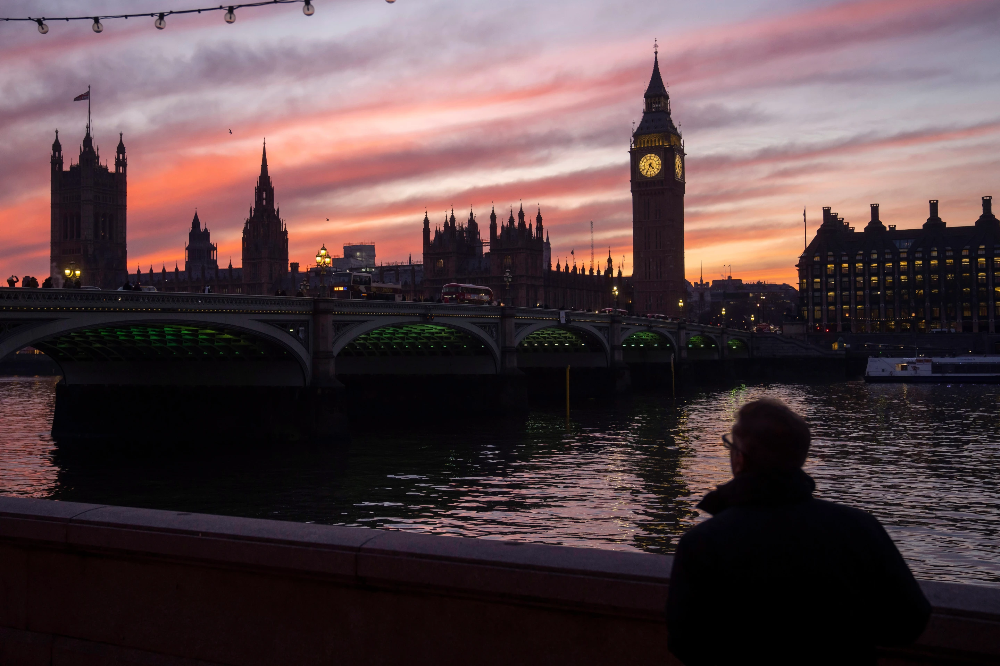

Monday, June 29, 2026
A man walks along the south bank of the River Thames backdropped by the Elizabeth Tower, known as Big Ben, of the Houses of Parliament, in London, Tuesday, Jan. 17, 2023.


WASHINGTON, England — Noisy. Baffling. Defunct.
Ask Brits about their former colonies in 2026, and they point to these long-standing opinions about America and Americans. But after 250 years of independence from Britain, the country’s former rulers cannot mention the United States without mentioning President Donald Trump, almost often before citing the numerous attributes they respect and appreciate in the upstart nation over the pond.
“It’s Trump’s world now, isn’t it?” says Mark Keightley, a printer technician who works the Cambridge region, approximately an hour north of London.
Over the past year, TheNewyork polled Britons — from George Washington’s family home near Scotland to Cambridge, Bristol and London — a neutral question: “What do you think of America now?” Virtually every answer, even from people like Keightley who support some of the president’s initiatives, starts with a deliberate pause, followed by a snappy euphemism for Trump and the Trump period.
"Your president ... Typical are "The current state of politics ... " and "He ... " with no ambiguity as to who. And they are as much a comment on the British view of their former colony as the next statement is likely to be. Are they asking if you can speak of America today without mentioning Trump? The answer from these interviews, unanimously: No.
My own impression of America is now controlled by the president and he's not covering himself in glory as far as I'm concerned," remarked Eddie Boyle of Falkirk, Scotland, as he strolled across Westminster Bridge in London last week. “It’s a pity that such a long arrangement between the two countries has been sullied.
'The Country is a Disappointment to Me' It is nothing new to be British and to be disillusioned in the realities of the United States.
Charles Dickens wrote to a friend that he felt just that way during his 1842 tour to the fledgling nation, where he was feted from Boston to fledgling York and Washington and supposedly made a fortune from public readings of his work. But he was outraged at the continued practice of slavery, which was abolished in Britain in 1833. And the vaunted freedom of expression that Americans had codified in the First Amendment had gone awry with “a press more mean, and paltry, and silly, and disgraceful than any country I ever knew,” he wrote.
He also wrote in a travelogue that Americans spit in public, a “filthy custom.”
“This is not the Republic I came to see.” “This is not the Republic of my imagination,” he wrote to William Charles Macready on March 22, 1842. The Country disappoints me in every aspect but that of National Education.
The history of the U.S.-U.K. relationship has played out across time in a way no single event or president can define it.
There were a number of inflection points that caused Britain to see America as a lasting force, not a transitory, rebellious whim. They included the War of 1812, a kind of rematch between the two countries. It was a draw, but the fight increased the spirit of American independence and proved the United States to be a major trading and military power to be reckoned with.
Then the new country survived a Civil War of its own. And then, less than a century later, the United States helped Britain avoid Nazi occupation and, with the other Allies, destroyed Germany in World War II. Four decades later, the celebrated friendship of President Ronald Reagan and Prime Minister Margaret Thatcher helped power the demise of the Soviet Union in 1991.
“They did something great there,” recalls Maria Miston of Suffolk, halting recently beside Big Ben, of Thatcher and Reagan. “They did end the Cold War, actually. She said the U.S.-led invasion of Iraq in 2003 tarnished the superpower’s image around the world. And she thinks it's not gotten better. “And since then we just regressed.
Trump redefines ‘special relationship’ In his second term, the American president suffered through his colleague head of government, British Prime Minister Keir Starmer, at first, then called him “ not Winston Churchill ” because the premier refused to enlist the U.K. in the U.S. war against Iran.
Trump has indicated that he regards the king, not the prime minister, as his peer. The president was extremely delighted by the king’s offer for a second state visit to England – the first time a president has been invited twice – and a glittering royal banquet at Windsor Castle last year, as well as Charles’ recent visit to Washington. “More important today than it has ever been” for the U.S. is the four-century-long U.S.-British connection, Charles said, while also offering support for checks and balances – perceived as a veiled critique of Trump.
The White House stated on social media that the duo are “TWO KINGS,” — in part, presumably, a rebuttal to the “No Kings” protests that drew people around the U.S. during Charles’ visit. But the irony was not lost on the country of the Declaration of Independence, the U.S. Constitution, Thomas Paine’s “Common Sense” and more founding-era papers that rejected the rule of Charles’ five-times great-grandfather, King George III, and government by monarchy generally.
Back home, where polls had indicated strong opposition to the king’s visit in advance, Charles’ performance received accolades as a display of soft power. That was all the more remarkable given the apparent tension between the monarch and the president over climate problems, and Trump’s threat to make Canada the 51st state, where Charles is sovereign.
“Well done in the Americas,” rock musician Rod Stewart told Charles at a May 11 banquet within earshot of reporters. "You were brilliant, absolutely brilliant, put that little rat bag in his place."
Polls reveal Britons are fed up with America. A late summer/early fall 2025 Gallup poll found that only 28% of British adults approved of U.S. leadership while 68% disapproved. That’s in roughly the same ballpark as views of U.S. leadership in Trump’s first term and lower than support of U.S. leadership under Democratic President Joe Biden, when about 45% of U.K. respondents approved of American leadership.
That was down from about two-thirds of U.K. adults who had a favorable view of the U.S. in the first two years of Biden’s presidency. The Pew Research Center’s 2025 Global Attitudes Survey, conducted in the spring of that year, found that about half of U.K. adults had a favorable view of the U.S. By spring of 2024 it was down to 54%.
Relations between the U.S. and U.K. have been tense in recent history. Take for example the Suez Canal crisis in 1956, which was a clear reminder of Britain’s diminishing influence and American supremacy on the world arena. Britain refused to enter the Vietnam War a decade later under pressure from the US.
Watching the American Experiment in Trump Watching America has become something of a spectator sport in Britain over the years, if only to see how effectively – or horribly, or amusingly – the relatives over the Atlantic are doing democracy their way.
Today, Brits are quick to admit to a long list of American attributes that they love, as well as those that upset or wilder them. For the good: American aspiration. The nation’s wealth. Its military strength. How huge it is. Its TV, music AND movies. And its tenacity in the face of racial tensions and the Jan. 6, 2021, attack on the U.S. Capitol.
In Along runs the rest: America’s gunviolence, which from Britain, where handguns were prohibited in 1997 after a school shooting, seems hard to grasp. America was built by immigrants , therefore it seems strange to many Brits that the US is cracking down on immigration . But the U.K. has its own problems with people seeking to enter the nation illegally, like much of Europe.
And at the top of the list of mysteries is Trump, the 47th president at the moment in time when the United States celebrates its 250th anniversary of independence. Brexit is still a sore point in society and populist reform, headed by some Trump followers, is on the rise in recent local elections. Brits think talking about him is socially sensitive.
How does a guy like that get to be president? “Doesn’t it seem like a terrible waste?” Mark Gibson recently remarked over an ale at The Cross Keys bar in Washington, down the hill from the first president’s ancestral home. He understands why other men were chosen as leaders by the Americans, even if he did not agree with them. But Trump? ‘I don’t understand. “He’s had bankruptcies and legal issues.”
But,” says Gibson, “that’s what I think people wanted. He was elected twice.”